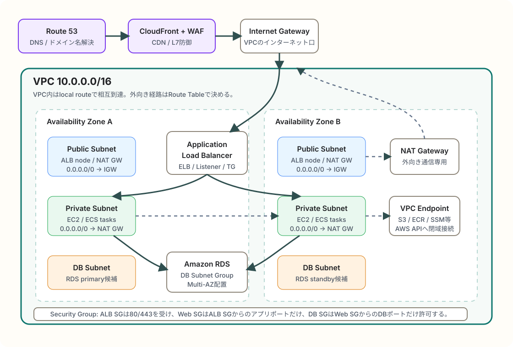

AWS / VPC / ネットワーク設計
AWSでWebサーバーとDBサーバーを分離する実践的なネットワーク構成
WebサーバーとDBサーバーをAWSに置くときは、VPC、Subnet、Route Table、Internet Gateway、NAT Gateway、Security Group、RDSのDB Subnet Groupを組み合わせて、入口・アプリ層・DB層を分けるのが基本です。ここではサービス呼称を思い出しやすいように、正式名と実務での役割を対応づけて整理します。
簡潔なQ&A
- Q. AWSでWebサーバーとDBサーバーを置くときの基本構成は？
- A. 1つのVPCを作り、2つ以上のAvailability ZoneにPublic Subnet、Private Subnet、DB Subnetを分けます。外部公開はApplication Load Balancerだけにし、WebサーバーはPrivate Subnet、DBはRDSのDB Subnet Groupに置きます。
- Q. 「ネットワーク周り」でまず覚えるAWSの呼称は？
- A. Amazon VPC、Subnet、Route Table、Internet Gateway、NAT Gateway、Security Group、Network ACL、Application Load Balancer、Target Group、Amazon RDS、DB Subnet Group、VPC Endpointです。
- Q. DBサーバーはPublic Subnetに置いてよい？
- A. 通常は置きません。DBはPrivateまたはIsolatedなDB Subnetに置き、Security GroupでWebサーバーのSecurity GroupからのDBポートだけを許可します。

全体像
実践的な最小構成は「外から見える入口」と「アプリを動かす場所」と「データを持つ場所」を分けることです。入口はPublic Subnet上のApplication Load Balancer、WebアプリはPrivate Subnet上のEC2やECS、DBはAmazon RDSをDB Subnet Groupに配置します。
Public Subnetとは、関連づいたRoute TableにInternet GatewayへのデフォルトルートがあるSubnetです。Private Subnetは、直接Internet Gatewayへ出さず、必要な外向き通信だけNAT GatewayやVPC Endpointへ流します。DB Subnetはさらに閉じた層として扱い、アプリ層からのDB接続だけを許可します。
構成要素とサービス呼称
| 呼称 | 何をするものか | 実務での覚え方 |
|---|---|---|
| Amazon VPC | AWS上に作る論理的な専用ネットワーク。CIDR、Subnet、Route Table、Security Groupなどの土台になる。 | クラウド内の自分用ネットワーク。まずここを作る。 |
| Subnet | VPCのIP範囲を分割した領域。1つのSubnetは1つのAvailability Zoneに属する。 | AZごとの置き場所。Public、Private、DB用に分ける。 |
| Availability Zone | リージョン内の独立したデータセンター群。障害分離の単位。 | 最低2つ使うと冗長化の基本形になる。 |
| Route Table | Subnetから出る通信の行き先を決めるルートの集合。宛先CIDRとターゲットを持つ。 | 「このSubnetの外向き通信はどこへ行くか」を決める表。 |
| Internet Gateway | VPCをインターネットへ接続するVPCコンポーネント。Public Subnetのデフォルトルート先になる。 | igw-...。Public Subnetの出口兼入口。 |
| NAT Gateway | Private Subnetのリソースがインターネット等へ外向き通信するためのマネージドNAT。 | Privateから外へ出るための片方向寄りの出口。外からの新規接続は受けない。 |
| Security Group | EC2、ALB、RDSなどに付けるステートフルな仮想ファイアウォール。 | インスタンスやサービス単位の許可リスト。SGからSGへの許可が実務で重要。 |
| Network ACL | Subnet単位のステートレスな許可・拒否ルール。 | Subnetの境界に置く粗いフィルタ。まずはSecurity Group中心で考える。 |
| Application Load Balancer | HTTP/HTTPS向けのロードバランサー。ListenerとRuleでTarget Groupへ振り分ける。 | ALB。Web公開の正面玄関。EC2へ直接公開しないための入口。 |
| Target Group | ALBが転送する宛先の集合。EC2、IP、Lambdaなどを登録し、Health Checkも持つ。 | ALBの転送先リスト。Webサーバーの生存確認もここ。 |
| Amazon RDS | マネージドなリレーショナルDB。Multi-AZ、バックアップ、パッチ適用などを任せやすい。 | 自前DBサーバーをEC2で持つより、まずRDSを選ぶ。 |
| DB Subnet Group | RDSを配置できるSubnetの集合。通常は複数AZのPrivate Subnetを指定する。 | RDS用の配置候補Subnetセット。DB本体そのものではない。 |
| VPC Endpoint | S3、ECR、Systems ManagerなどのAWSサービスへ、インターネットを経由せず接続する入口。 | NAT Gatewayを通さずAWS APIへ行く閉域ルート。コストとセキュリティの両面で効く。 |
通信経路の基本
ユーザーからWebまで
ユーザーはRoute 53で名前解決し、必要に応じてCloudFrontとAWS WAFを通り、Application Load Balancerへ到達します。ALBはPublic Subnetに配置し、HTTPSのListenerで受け、Target Groupに登録されたPrivate Subnet内のWebサーバーへ転送します。
WebからDBまで
WebサーバーはRDSのエンドポイントへ接続します。DB側のSecurity Groupは、送信元をWebサーバーのSecurity Groupに限定し、MySQLならTCP 3306、PostgreSQLならTCP 5432など、必要なDBポートだけを許可します。IPアドレス直書きより、Security Group参照のほうがサーバー増減に強いです。
Webから外部サービスまで
Private Subnet内のWebサーバーがパッケージ取得や外部API呼び出しを行う場合、Route Tableで0.0.0.0/0をNAT Gatewayへ向けます。NAT Gateway自体はPublic Subnetに置き、NAT GatewayからInternet Gatewayへ出ます。S3、ECR、SSMなどAWSサービスへの通信は、VPC Endpointを使うとインターネット経由を減らせます。
SubnetとRoute Tableの分け方
| Subnet種別 | 配置するもの | 代表的なRoute Table |
|---|---|---|
| Public Subnet | Application Load Balancer、NAT Gateway、踏み台を置くならBastion Host | 0.0.0.0/0 -> Internet Gateway |
| Private Subnet | EC2 Web/Appサーバー、ECS Service、内部向けアプリ | 0.0.0.0/0 -> NAT Gateway、必要に応じてVPC Endpoint |
| DB Subnet | Amazon RDS、AuroraのDBインスタンスやクラスター | 原則local route中心。インターネットへのデフォルトルートを持たせない設計が多い。 |
Security Group設計の実例
| Security Group | Inbound | Outbound |
|---|---|---|
| ALB用SG | 0.0.0.0/0 またはCloudFront管理プレフィックスリストからTCP 443。HTTPを使うならTCP 80も。 |
Web用SG宛てにアプリポート、例: TCP 80、8080、3000。 |
| Web用SG | ALB用SGからアプリポートだけ許可。SSHは原則直接開けず、SSM Session Managerなどを使う。 | DB用SGへDBポート、外部APIへHTTPS、必要なAWSサービスへVPC EndpointまたはNAT経由。 |
| DB用SG | Web用SGからDBポートだけ許可。管理者端末や全インターネットからのDB接続は避ける。 | 通常は最小限。RDS運用上必要な通信はAWS側が管理する。 |
実務でよくある構成パターン
小さめのWebアプリ
Route 53、ACM、ALB、EC2 Auto Scaling Group、RDS Multi-AZで始める構成です。EC2はPrivate Subnetに置き、ALBだけをPublicに出します。アプリのデプロイや管理にはSystems Managerを使うと、SSH用の公開口を減らせます。
コンテナ構成
EC2の代わりにAmazon ECSを使い、ALBのTarget GroupにECSタスクを登録します。Fargateを使う場合も、タスクはPrivate Subnetに置くのが一般的です。ECRからイメージを取得するために、NAT GatewayかECR向けVPC Endpointを考えます。
DBをさらに強く守る構成
RDSをPublicly accessibleにせず、DB Subnet GroupにはPrivateなSubnetを指定します。管理用接続が必要な場合も、ローカル端末からDBへ直通させるのではなく、VPN、Client VPN、Systems Managerのポートフォワード、踏み台などを検討します。
よくある誤解
- Public Subnetに置いたEC2が必ず公開されるわけではありません。Public IP、Route Table、Security Groupが揃って初めて外から到達できます。
- Private Subnetに置いただけで完全に安全になるわけではありません。Security Group、IAM、OSやミドルウェアの更新、ログ監視も必要です。
- NAT Gatewayは外部公開用の入口ではありません。Private Subnetから外へ出るための出口です。
- Network ACLはSecurity Groupの代替ではありません。SGはステートフル、NACLはステートレスで、使いどころが違います。
- DB Subnet Groupはファイアウォールではありません。RDSの配置先Subnetを指定する仕組みで、通信制御は主にSecurity Groupで行います。
要点
覚える軸は「VPCがネットワーク全体、Subnetが置き場所、Route Tableが経路、Security Groupが通信許可」です。実践構成では、ALBだけをPublic Subnetに置き、WebサーバーはPrivate Subnet、DBはRDSのDB Subnet Groupに置きます。外向き通信はNAT GatewayやVPC Endpoint、DB接続はWeb用Security GroupからDB用Security Groupへの必要ポートだけ、という形にすると、AWSらしい基本構成になります。